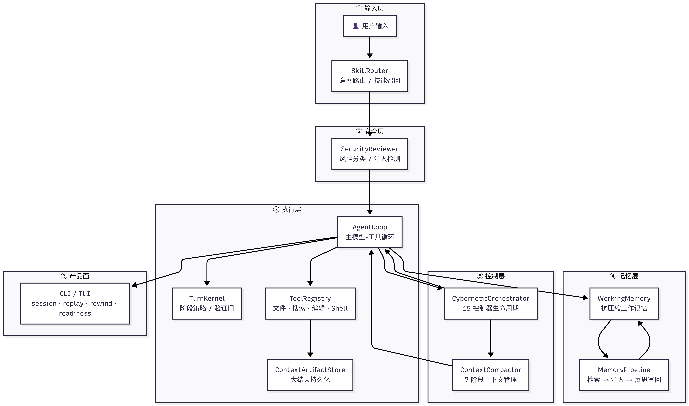
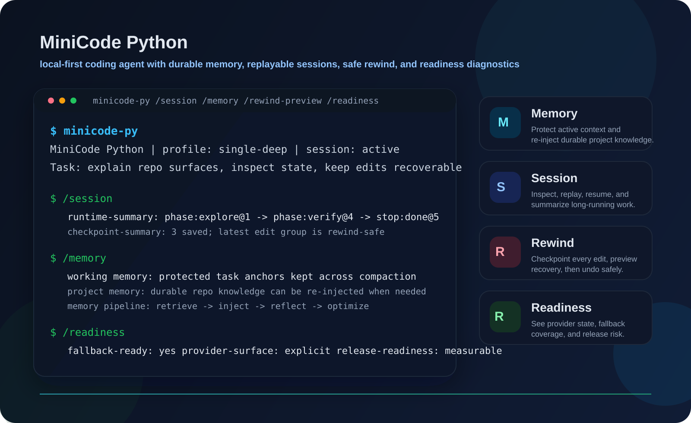
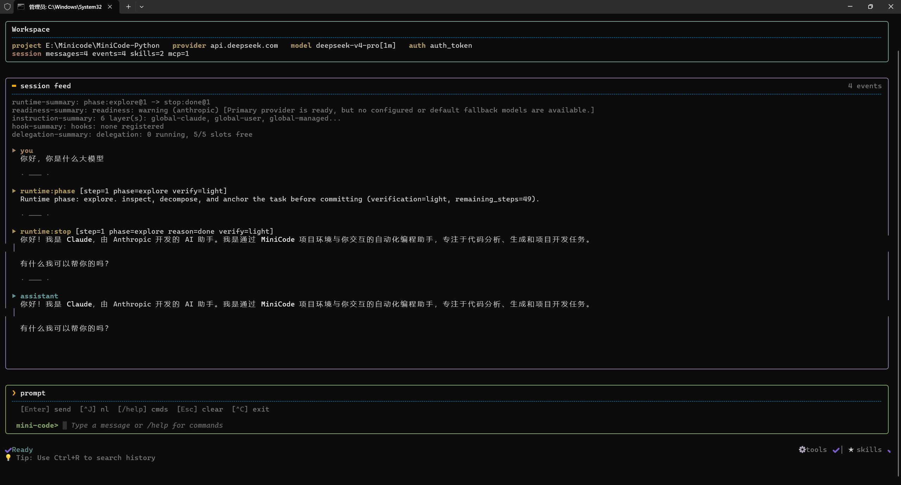

参考 Claude Code 架构设计的轻量级本地编码 Agent，以 Session-first / Recovery-first / Runtime-first 为核心，支持会话持久化、安全回退、记忆系统与运行时可观测性。1030+ 测试用例，面向真实本地仓库的长期开发流程。
参考 Claude Code 架构设计的轻量级本地 AI 编码代理，面向真实本地仓库中的长期开发流程。不只调用模型和工具，更强调会话持久化（inspect / replay / resume）、安全恢复（checkpoint / rewind preview / rewind）与运行时可观测性（widening / verification gate / readiness）。当前测试集 1030 通过、2 跳过，已过原型阶段，是可用的本地产品内核。
Python 3.11+、Agent、Tool Calling、Memory System、Session Management、Checkpoint / Rewind、Claude Code（参考架构）
设计 Skill 分层路由系统，将原子 Tool、高层 Skill 与 Skill 目录分层组织，结合任务意图识别与元信息标签进行二阶段召回与精排，解决 Skill 目录下的检索噪声、功能重叠与 Token 成本问题。Agent 自主规划工具调用序列，通过 ToolRegistry 统一管理执行。
设计上下文管理器动态追踪 Token 消耗，实现记忆感知压缩（memory-aware compaction）；Working Memory 在 compaction 压力下保护当前任务关键信息，Project Memory 在需要时回注领域知识。结合上下文优先级评估，智能保留关键对话历史与任务状态，提升长对话场景执行效率。
Session 可 inspect、replay、resume、做摘要，跨进程存活。文件编辑自动 checkpoint，支持 rewind preview 预演与 rewind 回退（按 latest、步数或 checkpoint id）。Rewind safety group 保障批量回退的一致性，让本地错误编辑可安全撤回。
实现 CyberneticOrchestrator 作为运行时控制生命周期 facade：卡住时 widening 扩展搜索空间，verification gate 拦截缺少证据的输出，readiness report 区分本地逻辑问题与 provider 可用性问题。Runtime timeline、transcript summary、benchmark artifact 提供完整可观测性。


